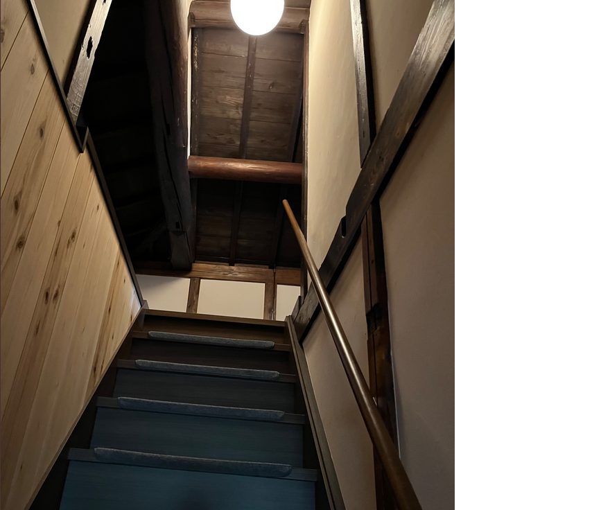

京都府和束町にある古民家「風和里（ふわり）」には、昔ながらの木造建築ならではの急な階段が残されています。太い梁や柱、漆喰の壁に囲まれた階段は、現代の住宅ではあまり見られない造りで、昭和初期の暮らしの面影を今に伝えています。 和束町は日本有数の茶産地として知られていますが、こうした古民家建築もまた地域の文化財産です。風和里の階段は、限られた空間を有効に使うための工夫であり、同時に家族の生活動線を支えた重要な要素でした。 古民家の急な階段を上り下りすると、当時の人々の暮らしぶりが感じられ、訪れる人にとって貴重な体験となります。
